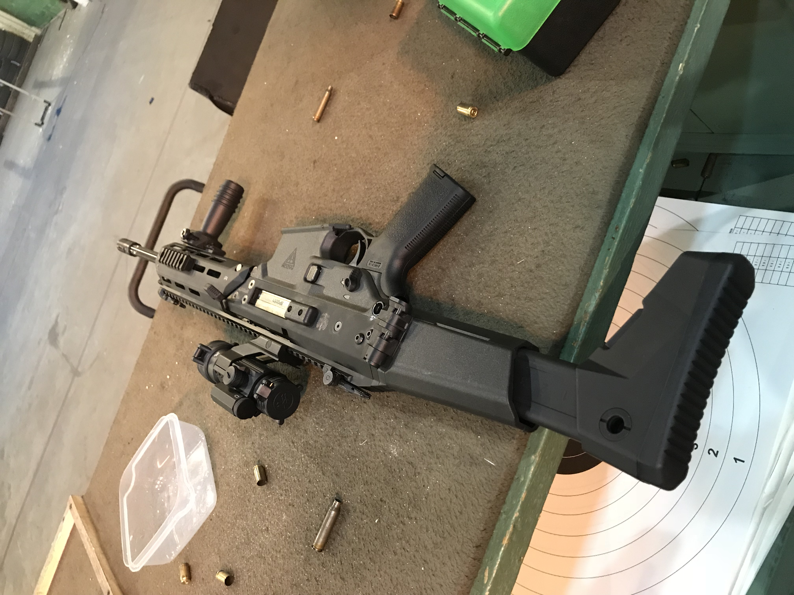
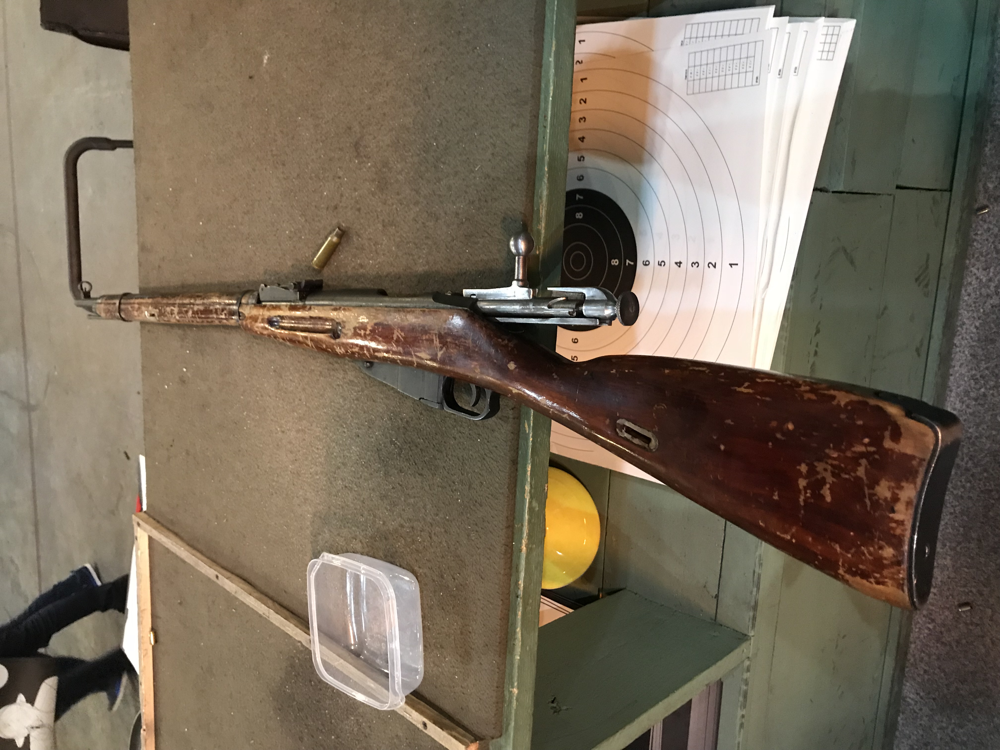
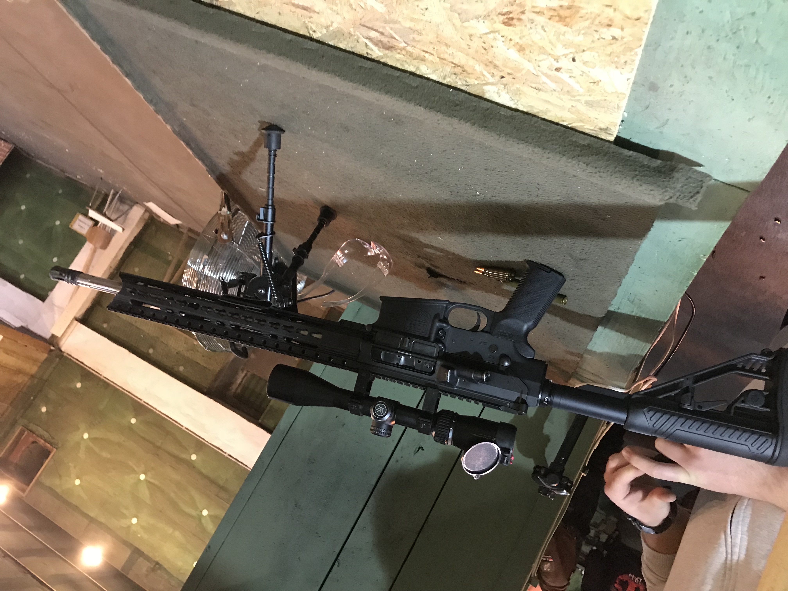

Pozwolenie na broń.
Istnieje przeświadczenie, iż zdobycie pozwolenia na broń w Polsce jest bardzo trudnym zadaniem. Otóż nic bardziej mylnego!
Wracając natomiast na ziemię - zdobycie pozwolenia jest trudnym i czasochłonnym procesem. Nie jest to jednak, jak wielu myśli, niemożliwe. Wystarczy właściwie nieco pieniędzy, czasu i, przede wszystkim, determinacji. Poza tym trzeba oczywiście spełniać wymogi wskazane w ustawie, to jest:
- mieć ukończone 21 lat (choć tu zdarzają się wyjątki i czasem może to być zaledwie 18 lat),
- nie mieć zaburzeń psychicznych, ani nie wykazywać znacznego ograniczenia sprawności psychofizycznej,
- nie być uzależnionym od alkoholu lub substancji psychoaktywnych,
- mieć miejsce stałego pobytu na terytorium Polski,
- a także nie stanowić zagrożenia dla siebie i otoczenia (tu uwzględnione są również osoby karane za umyślne przestępstwa).

Wstępne warunki, zawarte w ustawie, które należy spełnić wydają się więc dość proste. Należy jednak pamiętać, iż pozwolenie na broń nie zostanie wydane bez wykazania przez nas wyraźnego powodu do jego posiadania. Tych może być wiele i w zależności od pozwolenia o jakie się ubiegamy (o czym za moment) mogą one być bardziej lub mniej skonkretyzowane.

Obiecana więc kwestia rodzajów pozwoleń (uszeregowano je zgodnie z kolejnością wskazaną w ustawie):
1) ochrony osobistej
2) ochrony osób i mienia;
3) łowieckich;
4) sportowych;
5) rekonstrukcji historycznych;
6) kolekcjonerskich;
7) pamiątkowych;
8) szkoleniowych.
W przypadku ubiegania się o każde z powyższych pozwoleń należy przede wszystkim, tak jak wspomniano wcześniej, wskazać powód dla którego dane pozwolenie jest nam potrzebne. To też, w przypadku pozwolenia na broń do ochrony osobistej należy wykazać realne zagrożenie dla swojego życia lub zdrowia, by uzyskać pozwolenie sportowe koniecznym będzie zdanie egzaminu przeprowadzanego przez polski związek sportowy, a także uprawianie sportów o charakterze strzeleckim.
Podobne warunki stawiane są podczas wydawania każdego ze wspomnianych wyżej pozwoleń. Każdy rodzaj pozwolenia ma, rzecz jasna, inne przeznaczenie i osoby je posiadające mogą używać swojej broń jedynie do wskazanych przez ustawę działań (choć podczas obrony koniecznej możliwe jest użycie broni posiadanej do innych celów jednak to temat inny artykuł. Ustawodawca wyróżnia przykładowo, iż osoby z pozwoleniem kolekcjonerskim oraz pamiątkowym nie mogą nosić swojej broni (czyli - jak wyjaśniono w ustawie - przemieszczać się z załadowaną bronią).

Można więc jasno stwierdzić, iż, gdy zagłębimy się nieco w temat, zdobycie pozwolenia na broń w Polsce wcale nie jest aż tak nierealistyczne. Co więcej, istnieją organizacje które chętnie pomagają początkującym strzelcom w rozwijaniu hobby. Jeśli interesuje was kwestia zdobywania pozwolenia, serdecznie polecam stronę [to powinno być najlepiej hiperłącze po prostu --->] braterstwo.eu, na której będziecie mogli dowiedzieć się więcej o całym procesie.